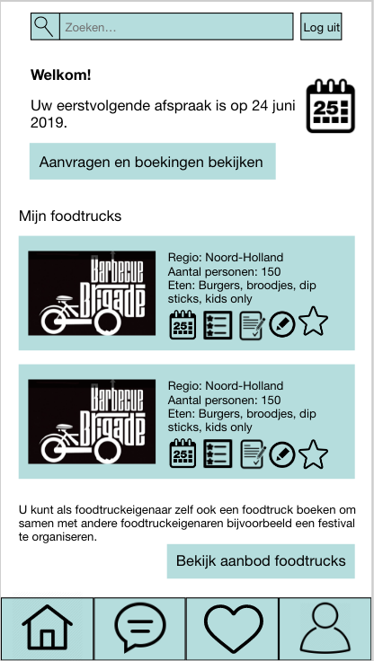
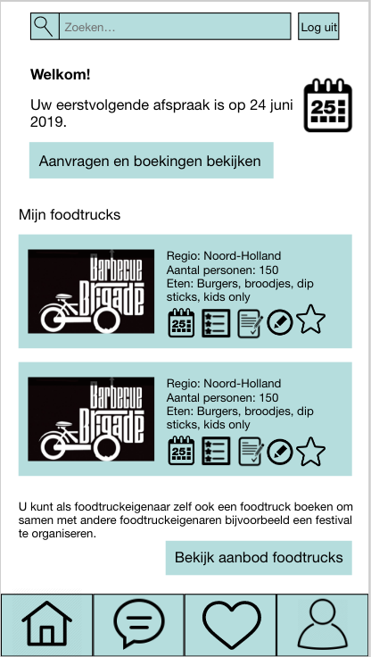

De opdracht
We kregen de opdracht om individueel een concurrerende app te maken van de huidige website van FoodtruckBooking.com in opdracht van de Rollende Keukens. Het wordt een soort van marktplaats voor foodtrucks. Foodtruckeigenaren kunnen hun foodtruck aanbieden en opdrachtgevers kunnen zoeken naar een foodtruck.
Hieronder zie je de homeschermen in een zero state, van de opdrachtgever (midden) en van de eigenaar (rechts).
 
